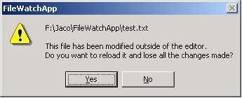

CFileWatchАвтор: Herbert Griebel.  Требования: VC6 SP4 Win2000 Данный класс поможет Вам отслеживать изменения в файлах наподобие DevStudio. Если файл будет модифицирован другим приложением, то выскочит окошко информирующее Вас об этом. Итак, внесём некоторые изменения в ViewClass и DocumentClass: В заголовок класса документа: class CFileWatchAppDoc : public CRichEditDoc
{
....
public:
void OnFileReload();
protected:
DWORD m_hFileWatch;
};
В исходник класса документа: #include "FileWatch.h"
CFileWatchAppDoc::CFileWatchAppDoc()
{
m_hFileWatch = NULL;
}
CFileWatchAppDoc::~CFileWatchAppDoc()
{
CFileWatch::RemoveHandle(m_hFileWatch);
}
BOOL CFileWatchAppDoc::OnSaveDocument(LPCTSTR lpszPathName)
{
CFileWatch::RemoveHandle(m_hFileWatch);
BOOL bSuccess = CRichEditDoc::OnSaveDocument(lpszPathName);
m_hFileWatch = CFileWatch::AddFileFolder(lpszPathName, NULL,
this, 0);
return bSuccess;
}
void CFileWatchAppDoc::SetPathName(LPCTSTR lpszPathName,
BOOL bAddToMRU)
{
CFileWatch::RemoveHandle(m_hFileWatch);
m_hFileWatch = CFileWatch::AddFileFolder(lpszPathName,
NULL, this, 0);
CRichEditDoc::SetPathName(lpszPathName, bAddToMRU);
}
void CFileWatchAppDoc::OnFileReload()
{
SetModifiedFlag(FALSE);
if (CDocument::OnOpenDocument(GetPathName()))
UpdateAllViews(NULL);
}
В заголовочный файл view-класса:
class CFileWatchAppView : public CRichEditView { ... protected: //{{AFX_MSG(CFileWatchAppView) //}}AFX_MSG afx_msg LRESULT OnFileWatchNotification(WPARAM wParam, LPARAM lParam); DECLARE_MESSAGE_MAP() }; В исходник view-класса: BEGIN_MESSAGE_MAP(CFileWatchAppView, CRichEditView)
//{{AFX_MSG_MAP(CFileWatchAppView)
//}}AFX_MSG_MAP
ON_THREAD_MESSAGE(WM_FILEWATCH_NOTIFY, OnFileWatchNotification)
END_MESSAGE_MAP()
LRESULT CFileWatchAppView::OnFileWatchNotification(WPARAM wParam,
LPARAM lParam)
{
LPCTSTR lpszPathName = (LPCTSTR)lParam;
if (AfxMessageBox(GetDocument()->GetPathName()+
"\n\nThis file has been modified outside of the editor." +
"\nDo you want to reload it and lose all the changes made?",
MB_YESNO|MB_ICONQUESTION)==IDYES)
GetDocument()->OnFileReload();
return 0;
}
Будьте осторожны: Тестовая функция void CFileWatchAppDoc::OnFileModify() не будет работать!
DownloadsСкачать демонстрационный проект - 60 Kb Скачать исходник - 3 Kb
|